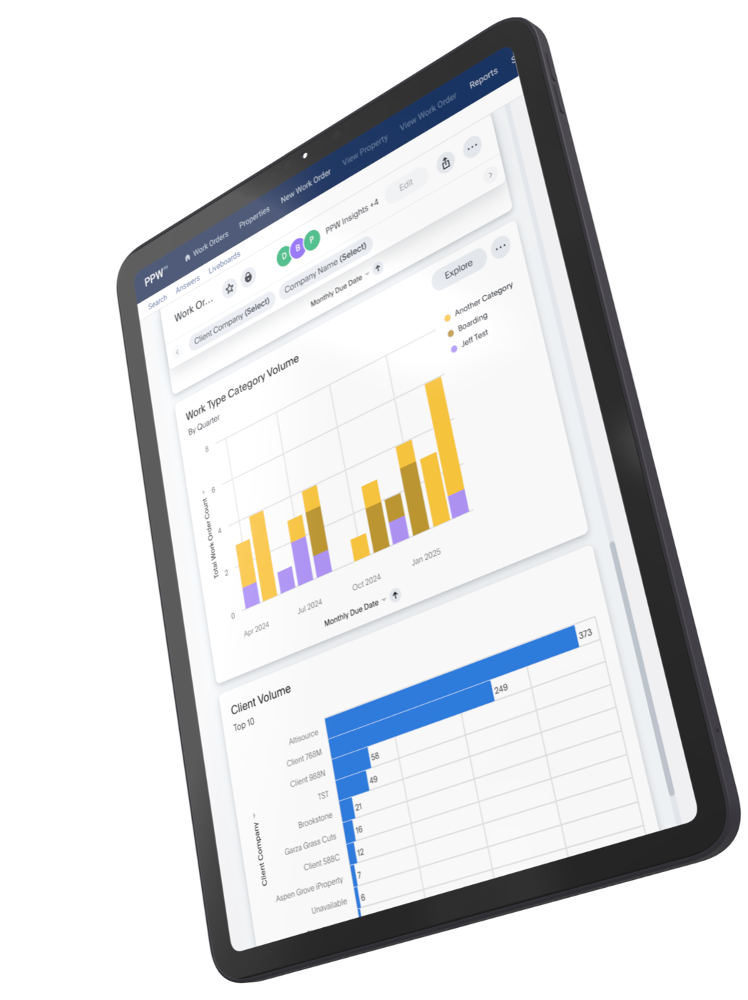

Product transformation
Transforming our property suite for enterprise success
In 2023, we set out to redefine how our property suite of products was perceived in the industry. While we already held a significant share of the lower-end market, our goal was to position ourselves as the premier choice for enterprise customers. To achieve this, we launched several key initiatives:
- Modernized UI: We enhanced the user interface to provide a more polished, intuitive experience—ensuring enterprise customers saw our solution as both modern and scalable.
- Mobile expansion: We initiated the development of a robust mobile solution to extend our platform’s capabilities.
- Optimized pricing strategy: We refined our pricing model to better align with enterprise needs.
- AI-powered enhancements: We integrated more AI-driven features to improve automation and decision-making.
- Insights: In 2024, we introduced Insights, a seamlessly integrated tool with a game-changing analytics capability that became a major catalyst for growth.
These strategic investments paid off—2024 marked our largest revenue year to date, with a record number of enterprise accounts signed and onboarded.